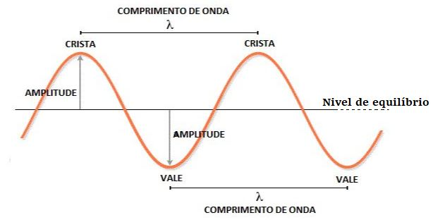

Aula8-63: Equação fundamental da ondulatória
Antes de partirmos para a analise da equação que é objeto de estudo desta aula, precisamos conhecer algumas propriedades que são comuns a todas as ondas (sejam elas mecânicas ou eletromagnéticas).
Propriedades de uma onda

Comprimento de onda (
|
AmplitudeÉ a distância entre o nível de equilíbrio e a crista ou o vale da onda. Obs.: A amplitude depende da fonte emissora; à medida que a onda se desloca, a amplitude tende a ser diminuída até não haver mais onda. |
Frequência e período
Conforme aprendemos anteriormente, em mecânica (movimento circular), a frequência é o número de determinado evento por unidade de tempo (normalmente, por segundo). Aqui, no estudo de ondas, a frequência será caracterizada pelo número de oscilações por segundo; e a unidade de medida para frequência será o hertz (Hz).
em que n é o número de oscilações e t é o intervalo de tempo necessário para que elas ocorram;
Obs.: A frequência, assim como a amplitude, depende exclusivamente da fonte emissora da onda.
O período é o tempo necessário para que um destes acontecimentos, que ocorrem periodicamente, aconteça.
Logo o período é o inverso da frequência.
Equação fundamental da ondulatória
É a equação que nos informa a velocidade de uma onda em função de seu comprimento de onda e frequência.
Demonstração:
, perceba que se considerarmos o deslocamento como sendo o comprimento de onda, então o tempo necessário para este deslocamento seja percorrido é o período. Logo: